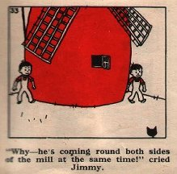
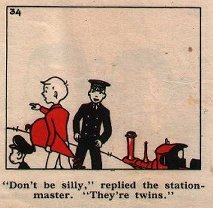
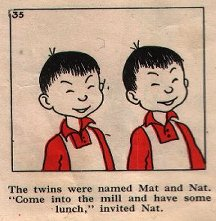

Wednesday, March the 10th, 2004
back to: title, date or indexes
On Monday 8th March we published one of Dobson's so-called “ghost photographs”, thought to be the only extant picture of those tiresome yet strangely attractive twins, Istvan & Zoltan, whose madcap escapades have thrilled a handful of readers. But Dr Ruth Pastry has news for us. “I was clearing out one of the leisure-and-relaxation module-compartments in my space-age home,” she writes, “to make room for my new collection of The Passion Of The Christ-related merchandise, when I came upon a little book called Jimmy At The Seaside by Neville Main, published by the Brockhampton Press in 1949. Imagine my surprise when, leafing through it, my eyes fell upon some pictures of twins who bear a striking resemblance to your dashing duo. They may be given different names in Mr Main's ur-text, but surely these are Istvan and Zoltan avant le lettre? I claim my five pounds.”
